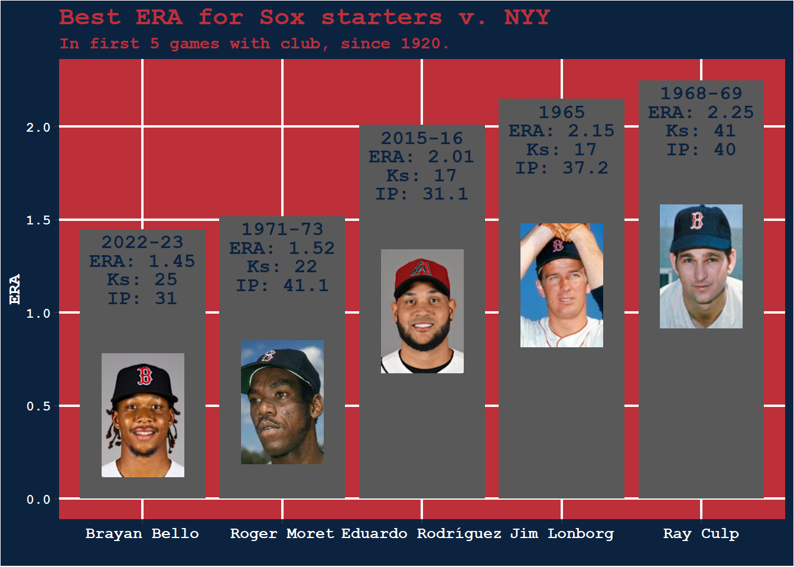
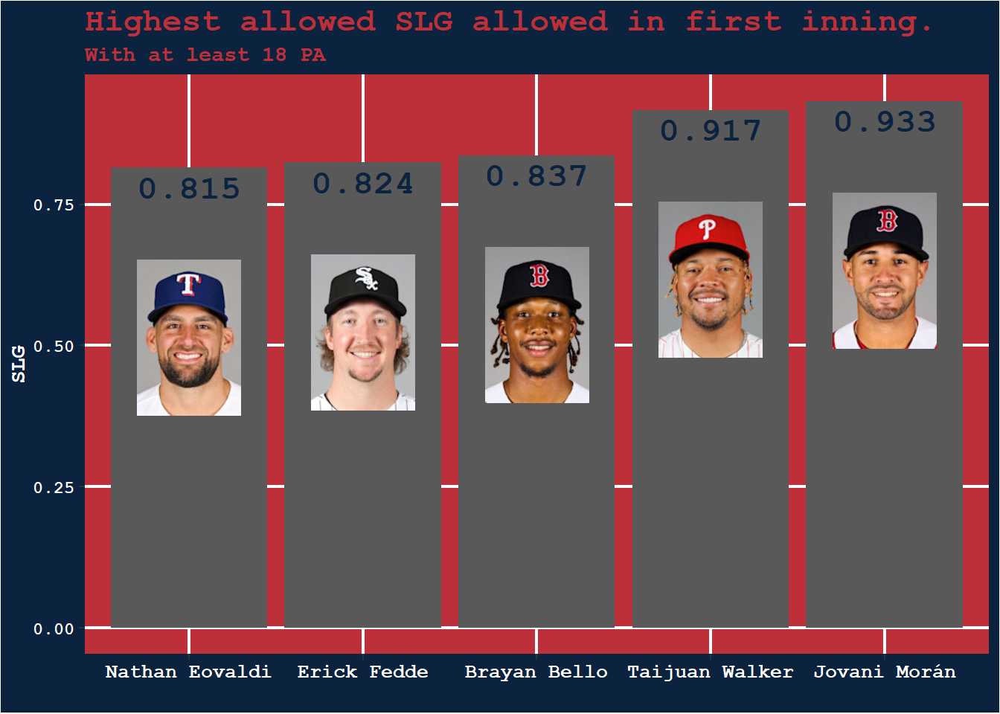
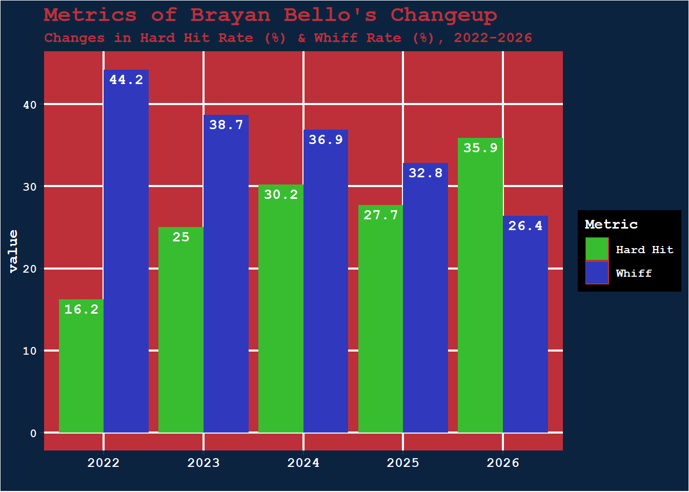
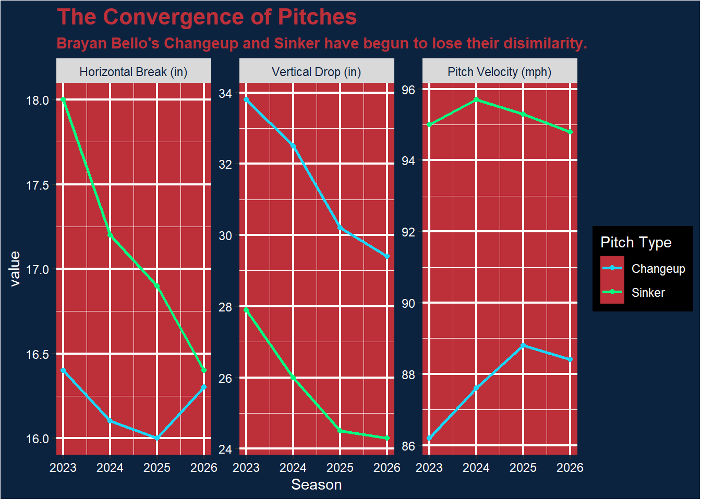
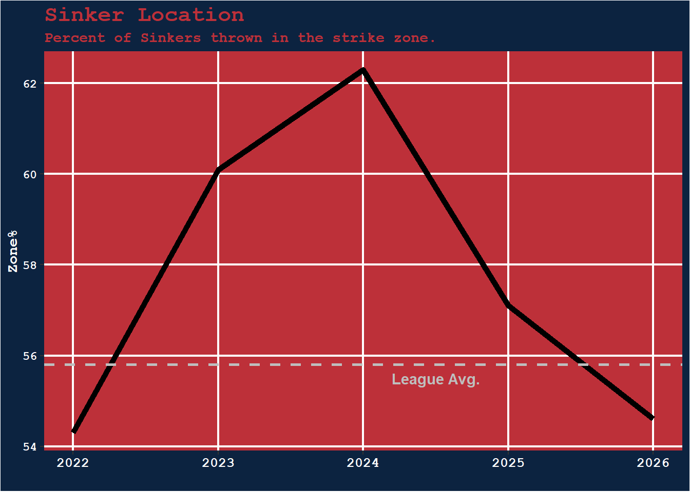
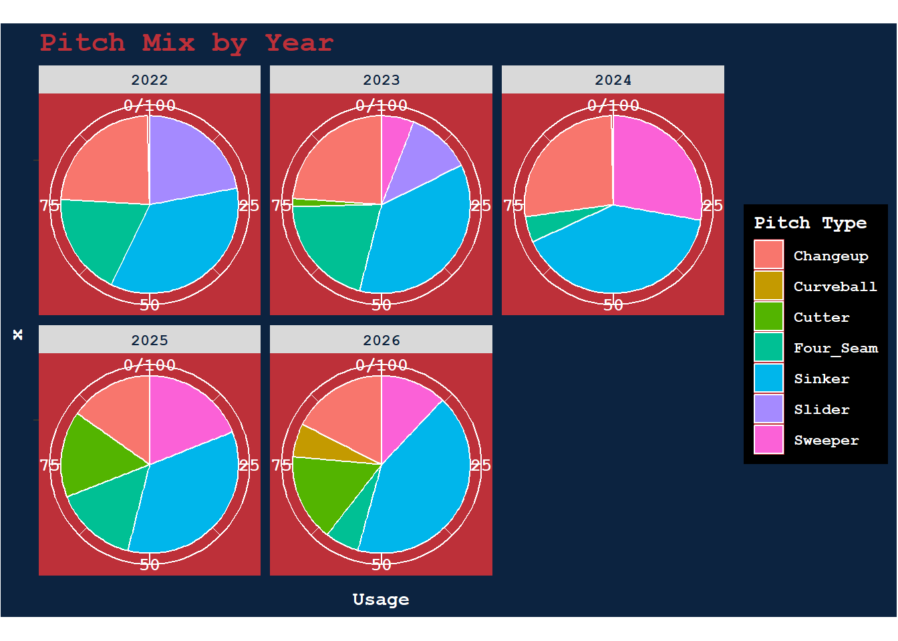
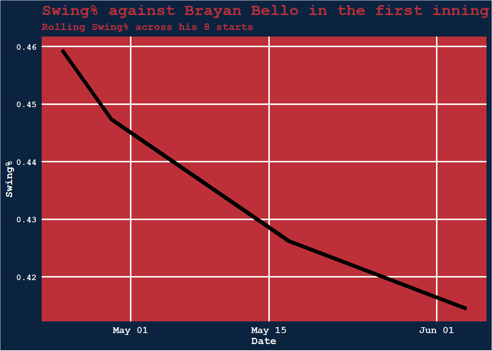

Breaking Down Bello
Brayan Bello has been sent down to AAA, what is the cause for his disastrous season and will he contribute in Boston in 2026?
The Boston Red Sox agreed to a 6-year extension, totalling $55 million with Brayan Bello prior to the 2024 season. Leading up to this extension, Bello was one of the most promising young arms on a Red Sox staff amongst a hodgepodge of older arms on one-year deals like Corey Kluber and James Paxton. The promise was there for the righty and he quickly worked his way into the hearts of the Red Sox faithful.
The Yankee Killer
In his first two years in the league, Bello seemed to relish getting the ball versus the most hated team in Boston, the New York Yankees. In his first 2 seasons, Bello went toe-to-toe with the Evil Empire five times and held an ERA of just 1.45 in those games. In 4 of those 5 starts he went +6 innings of allowing just 1 earned run. The excitement around Bello was palpable and Red Sox fans were itching for a dominant starter in the age when Chris Sale seemed to never get healthy. After the 2021 ALCS run, the Red Sox team ERA over the next two seasons was the 3rd highest in the American League, leading only the A’s and Royals. The newfound Yankee Killer had all of Boston behind him; some Bostonians even crowned him as the second coming of Pedro Martinez.
Skip to June 5th, 2026, Brayan Bello was optioned to AAA after his most miserable start of the year, one that swelled his ERA to a grotesque 6.34. The Baltimore Orioles tagged Bello with 6 runs in the first and 2 more across the subsequent four innings, bringing his total line to: 5 IP, 8 ER, 3 BB, 4 SO. This start came after a slough of games where Bello was pitching after an opener. The decision to use an opener came from Bello’s inability to get top-of-the-lineup hitters out early in the game. The Red Sox brass figured protecting Bello early may help him pitch through the rest of a game. Anything seemed better than his first inning ERA of 11.57 on June 1st. In the 4 games he started a game with an opener he had an ERA of 0.71. Smooth sailing in the new experiment. But his next two starts after first using an opener were even more disastrous than previous. These two games being the aforementioned Oriole game and his start against the Braves, where he allowed 3 runs in the first and totalled 7 over 5 innings. As of his demotion on June 5th, Bello had the third highest SLG against in the first in all of baseball. The highest allowed SLG in the first inning is held by the pitcher who opened for Bello in his first 3 games with an opener, Jovani Morán.

Changeup Decay
Bello’s changeup was a marvel when he was called up from Worcester in 2022. The pitch induced a swing-and-miss 44% of the time compared to the 30% league average. He allowed hard hit balls only once in a blue moon, coming at a rate of 16%, 6th lowest in MLB. Now as we progress to 2026, that changeup has become a husk of its former self. The 2026 whiff rate generated from the pitch is just 24%, well below the league average.

The pitch has deservedly lost its production, as supported by the underlying metrics. A changeup gets most of its value by dropping out of the batter’s swing path, especially if the batter is set up for a fastball variant; the sinker in Brayan Bello’s case. However his changeup has lost this drop that made the pitch effective. Over the past two seasons there is significantly less drop on the pitch, and therefore more batter success. This loss of movement from the changeup and loss of velocity in the sinker has the led the two pitches on a convergent path, path that makes it easier for hitters to adjust between the two pitches. But why is there such a change in his changeup?

Loss of Command
The sinker for Bello is thrown around 40% of the time in 2026, but he does not seem to be comfortable throwing it. His location of the pitch is the worst of his career, only throwing it in the zone 51% of the time. Of sinkers thrown as the first pitch of a plate appearance, Bello has only thrown 75% in the zone. Which sounds decent enough, but most pitchers are in the zone 83% of the time throwing a first pitch sinker. A steady decrease in command of his most thrown pitch is a major warning sign for Bello’s productivity in the future.

An Ever Changing Mix
On June 5th, Craig Breslow said that he hopes that Brayan can find his love for baseball again. This was soon followed by Bello stating that he has, and will always, love the game. This disconnect between the Red Sox Chief Baseball Officer goes further than these dichotic statements. When Breslow took over the Red Sox front office in 2024, Bello’s whole approach and pitch mix changed. His four-seamer was dropped from his arsenal in favor of a sweeper that surpassed the usage of his changeup to become his number two pitch. In 2025 and 2026 the changeup was thrown the least of his career, in favor of a newly introduced cutter and the sweeper from 2024. All of this tinkering under Breslow surely led to some soul-searching for the young right-handed pitcher who identified so much with his changeup in his days on the farm. The lack of identity for Bello may play a part in his mental struggle to get control of his ever-changing arsenal.

How will Brayan come back to Boston?
Now, when can we expect Bello to find himself in Worcester and what steps will bring him back to Boston? There are obviously issues with his decaying arsenal, which have already been laid out, but how will Bello elude his first inning struggles? MLB hitting labs now have a read on Bello, to make him throw more pitches in the first. MLB hitters have become less aggressive against Bello in the first inning as the season has gone on. This lack of aggression leads to longer counts and gives a pitcher with a lack of focus more time to brood over his first inning complications. The issue isn’t that Bello can’t throw strikes in the first inning; it’s that hitters are patient enough to know there will be a quality pitch to hit if they see enough pitches. The barrel rate allowed by Bello in the first inning is 11%, 8% higher than the rest of his innings of work combined. This patience from batters also leads to walks. If Bello wants to change the narrative of this season, he will have to bear down in the first innings. Challenging these batters that are waiting for a good pitch is what he needs to do. This may mean moving away from the sinker, which has been his comfort blanket his entire career.
In the first inning, the sinker is thrown in the zone 51% of the time but batters only swing on 39% of pitches. Alternatively the cutter is in the zone 54% of pitches and induces a swing 51% of pitches. Batters are too prepared for the sinker from Bello, so by mixing in the other fastball variant, hitters will not be able to sit back so easily. The cutter even generates a whiff on 52% of swings in the first inning. It will be difficult to dwindle the usage of his sinker, but for Bello a move away from his status quo may be what saves his career.

I will keep an eye on Bello’s usage of his cutter and sinker while down on the farm.